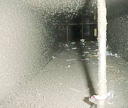

Im Privatbereich ersetzt der neue Schweden- oder Kachelofen oft das vormals wandnah wärmeabgebende Heizsystem. So unterkühlen die dann kondensatdurchfeuchteten Aussenwände mit Schimmelfolge trotz "Strahlungsheizung". Besonders, wenn nicht durchgeheizt wird, sondern mit zeitweise Unterbrechungen der Wärmezufuhr. Gerade in bewohnten Häusern kommt es auch bei üblicher Konvektionsheizung (Heizkörper, Radiatoren, Nachtspeicheröfen) in Schlafzimmern und Kinderzimmern immer wieder zur "gewollten" Unterkühlung der Baukonstruktion - man will ja kalt und gesund schlafen - in die dann die aus der Atemluft, dem Schwitzen und den Naßräumen stammende Luftfeuchte in erheblichem Umfang einwandert. Nachtabsenkung der Heizung und grundsätzlich niedrigere Temperaturversorgung begünstigen ja die Auskühlung der Baukonstruktion, die dann um so mehr Feuchte einkondensiert. So entsteht nicht nur Schimmelpilzbefall, auch der Befall der hölzernenen Baukonstruktion mit Holzschädlingen, die eine erhöhte Holzfeuchte zur Entwicklung brauchen wie der Echte Hausschwamm, der Braune Kellerschwamm, der Weiße Porenschwamm und der Blättling sowie Insekten wie der gemeine Nagekäfer, der gescheckte Nagekäfer, der Trotzkopf (Anobien) und der Hausbock/Holzbock kann als Folge falschen Heizens auftreten.
Themenlink: Holzschädlingsbefall - was tun?
So verrottet das Bauwerk und seine Ausstattung, entweder, weil sie ungeheizt bleiben oder weil zerstörerische Heizsysteme an den Mann und in Betrieb gebracht werden, ohne auf die bösen Folgen hinzuweisen. Dabei wird den skeptischen Bauherrn hin und wieder von interessierter Seite eingeredet, heutige Umluft- oder Konvektionsheizungen hätten die bekannten Kinderkrankheiten überwunden. Man schwärmt von langsameren und weniger strömungsintensiven Aufheizvorgängen dank moderner Technik. Verschweigt aber das Hauptproblem: Es bleibt bei warm-feuchter Luftbeaufschlagung der kalten Bauteile. Merke: Heizluft schmutzt, befeuchtet, zerstört. Egal wie schnell oder langsam sie herumgeblasen wird. Natürlich gibt es graduelle Abhängigkeiten vom Temperaturverlauf und der Strömungsgeschwindigkeit. Systematisch bleibt das Grundproblem aber bestehen. Ein immer schneller werdender Rhythmus wiederkehrender Instandsetzungen ist die angenehme Folge für das Bau- und Restaurierungsgewerbe. Für die Bauwerke ist das allerdings eine gezielte Vernichtungskampagne des Heizungsbauers, fleißig unterstützt vom Heizungsfachplaner und vor allem dem treu sorgenden Hausmeister, Majordomus, Kastellan, Küster oder Mesner. Herabstürzende Deckenputze, schwerstens vollgesogen mit Kondensat und dank intermittierender Feuchte- und Temperaturdehnung losgelöst vom Putzgrund oder giftschimmelberastes Inventar sind die Exempel für den Erfolg fleißiger Befeuchtungskunst. Das kann man durch Warmfeuchtnaturluftzuführung in kalte Innenräume im Frühjahr, Sommer und Herbst ebenso steigern wie durch temporäre schweiß- und atemfeuchteabgebende Menschenzusammenrottungen in veranstaltungsgerecht langsam oder gar schnell aufgeheizten Gottesdiensten mit Kerzen- und Weihrauchberußung, Busladungsgehetze durch klimatisierte Ausstellungsräume, Konzerterfolge oder Nachtabsenkung und Klimatisierung.
Der Witz: Die Kondensatschäden am Sockel (oder Feuchteschäden wg. defekter Grundleitungen bzw. drückenden Oberflächen- oder Schichtenwassers bzw. wg. früherer Salzbelastung) werden als "aufsteigende" Feuchte mißgedeutet und bieten Argumente für den fortgeschrittenen Bauwahnsinn: zerstörerische Isolierungsmaßnahmen, nutzlose Trockenlegungen, Altputzaustausch gegen als "Sanier(=Heil)putz" bezeichneten wasserabweisenden Zementsperr- bzw. Treibmineralputz und fundamentsockeldurchnässende Drainagen. Natürlich alles Unsinn, aber hübsch teuer. Das ist besonders schön für mindestsatzunterbietende Planer, die mit solchen herstellerberatenen "Standards" Expertentum vorspiegeln und Planung einsparen, bei bestem Effekt für das Planungshonorar. Davon merkt die auf Nebenkostenschneiderei spezialisierte Beamtenprüfung eines Förderprojektes natürlich nichts. Hauptsache, der Bauherr und die Denkmalfachleute glauben daran und zahlen.
Ein nützlicher Themenlink zur "Aufsteigenden Feuchte".
Das Kondensat aufsteigender warmfeuchter Raumluft oder feuchtebeladener Außenluft führt zur Auflagervermorschung im "kühlen" Holzdachstuhl- und Balkendeckenbereich. Oft werden Auflagerschäden an der Dachtraufe aber fälschlicherweise eindringendem Regen zugeschrieben. Eine entsprechende Energiezufuhr mittels Temperierung kann diesen Abkühleffekt wirkungsvoll behindern. Mit mineralischem Holzschutz ohne Gift kann dann die querschnittsgetreue und nur das zerstörte Holz austauschende Instandsetzung und Behandlung dieser Bereiche erfolgen. Metrige Prinziprückschnitte - Ergebnis schwachverständiger Beratung - entfallen so. Natürlich kann man das Holz und myzelbefallene Mauerwerk auch normen- und expertengläubig vergiften und den Bestandsaustausch mit klobigen Beilaschungen weiter auf die Spitze treiben. Schön auch die wiederkehrend mit Gift, Gas und Heißtemperaturbelastung "behandelten" schädlingsbefallenen Inventare und Exponate der kondensatbenässten Buden, deren teuflischer Dunst dann die Gesundheit ihrer Peiniger, leider auch sonstiger Unbeteiligter nachhaltig angreift. Wenn man hier nach Arbeitsstättenrichtlinien betr. Raumluftbefrachtung mit Sporen, Stäuben und Giften vorgehen würde, wären die Museen, Burgen, Schlösser und Kirchen voraussichtlich öfter geschlossen als üblich. Allein der altbautypische Muff zeigt ja an, wo´s diesbezüglich hapert.
Der als Coanda-Effekt beschriebene Warmluftauftrieb von der 'heißen' Wandoberfläche im Heizleitungsumfeld erwärmt - ganz im Gegensatz zum raumgreifenden Warmluftauftrieb von Konvektionsheizungen (Zimmertaifun) - die gesamte Wand allmählich über den Leitungsführungsbereich hinaus. Der Coanda-Effekt läßt sich z. B. durch Rauchströmung sichtbar machen. Voraussetzung für seine Entstehung ist ein möglichst oberflächennah geführtes Rohrsystem und eine ausreichende Vorlauftemperatur. Bei Blockade der Rohrwärme durch zu tiefen Einbau im Wand- bzw. Bodenquerschnitt oder durch vorgesetzten Holzsockel können die erforderlichen Oberflächentemperaturen (über 45 Grad Celsius) hierzu nicht zuverlässig erreicht werden. Auch wandbündige oder Einbaumöbel, die den Aufluftstrom unterbrechen, reduzieren damit die Temperierwirkung. Bei an der temperierten Wand hängenden Bildern/Objekten haben sich rückseitig montierte Abstandshalter (z.B. Korken) bewährt.
Die vielfältigen Wirkungszusammenhänge der Temperierung werden von Verfechtern der etablierten Systeme meist unterschlagen, vielleicht auch als Reaktion auf zu heißgläubige Beschwörungen dieser Experimantaltechnik. Die hier am Markt eingesetzten "Untersuchungen" sind also mit Vorsicht zu genießen. Und so wird auch die Anstrengung der Industrie verständlich, auf den abgefahrenen Zug der Temperierung mittels Deckenstrahlplatten (sie übertragen wesentliche Negativeigenschaften der Fußbodenheizung an die Decke, Wärmeangebot wird umsatzsteigernd weit vom Bedarf installiert) oder Hypokausten- und sonstige Wandheizungssysteme (Kammersteine mit aufwendigen Heizleisten oder Unterputz-Rohrsystemen, ein umwegbetontes wartungsfeindliches Wärmeangebot) aufzuspringen. Gemeinsam haben diese Industrie-Lösungen, daß sie im Verhältnis zum auch mit Minimalaufwand erreichbaren Ergebnis unverhältnismäßig teuer und in der Effizienz eingeschränkt sind. Dies betrifft sowohl die Dimensionierung des Energieerzeugers wie auch der wärmeabgebenden Systeme. Eben gut für alle, bis auf den Bauherrn.
Daß der Heizungs- und Klimaingenieur gerne aufwendige und normengestützte Anlagentechnik empfiehlt, liegt in der Struktur seiner Ausbildung und Honorarordnung. Warum soll er mit Minimal-Honorar zufrieden sein (Temperierlösung), wenn er mit zigfach teurerer Luftheizung, üblicher Klimatechnik oder nun auch überdimensionierter Strahlungsheizung weit mehr als das 10fache locker herausholen kann und sich dabei noch auf DIN berufen kann? Sein bedenkliches Stirnrunzeln genügt meist schon, um den Bauherrn irrezuführen. Auch der Architekt ist nur selten als Normenskeptiker hervorgetreten. Auch sein Honorar schwillt ja mit teurer Technoplanung an.

So sieht es in einem Klimaschacht nach kurzer Zeit aus. Staub, Dreck, verkeimte Schleime, Bakterien, Schimmel - alles ist in einer Lüftungsanlage, in einer Klimaanlage, im Lüftungsrohr und Lüftungsschacht dank an den gegenüber Raumlufttemperatur immer kühleren Innenwandungen kondensierender Abluftfeuchte und filterdurchdringenden Feinstäuben möglich und macht die solchen Technikwundern ausgesetzten Raumnutzer krank. Sick building syndrome heißt das dann. Unfaßbare Sauerei, und das wird dem Nutzer ingenieurseits, EnEV- und normgerecht zugemutet. Ein Abstrich von einer Lüftungsanlage offenbart den Vorhof zur Hölle: Pfui! (Mehr Info + Bilder)
Pfui! (Mehr Info + Bilder)
Wenn wenigstens die Betroffenen begreifen würden, daß die Raumtemperatur das wirkungsvollste und einfachste Werkzeug ist, um das Raumklima zu steuern, hätte die teure Klimatechnik wenigstens im Museum bald ausgespielt (die geizvergeilten Passivhäusler wollen ja lieber verrecken als normal bauen und gönnen sich deswegen die "kontrollierte Wohnraumlüftung", unbedingt mit "Wärmerückgewinnung / Lüftungswärmerückgewinnung LWRG". Nur durch Absenkung der Raumlufttemperatur im Winterbetrieb von ca. 21oC auf ca. 15-18oC wird schon eine bedeutende Verminderung der Exponataustrocknung und damit -schädigung erreicht. Ohne teure und riskante Luftbefeuchtung, die bei 21oC und damit verbundener rel. Luftfeuchte von ca. 25% sonst unabdingbar wäre. Eine derartig reduzierte Lufttemperatur kann im Zusammenhang mit einer Hüllflächentemperierung ohne Komforteinbußen betr. Behaglichkeit immer noch beste Raumnutzung garantieren - bei für das Exponat unschädlichen rel. Luftfeuchten mit ca. 40%. Schon seit 1923 liegen die Erkenntnisse von Fritz Jacobssons Heizversuchen im winters ungenutzten Schloß Gripsholm vor. Er stellte fest, daß mit einer strahlungsintensiven Grundtemperierung der Raumluft von nur 5-7 oC, die er elektrisch mit ca. 3-4W/qm in historischen Kachelöfen installierte, eine konservatorisch absolut unbedenkliche rel. Feuchte um die 60% sicherzustellen war. Das kostet ja fast keine Energie udn war ein bedeutender Erfolg gegenüber fast 100% rF im untemperierten Zustand.
Daß die Zusammenhänge am Bauwerk lieber zur kompliziert-geheimnisvollen Wissenschaft mit tabellarischer Zahlenmystik und undurchsichtigen Grafiken erhoben werden, ist verständlich. Wer soll denn sonst Klimamessungen und "Gutachten" bezahlen, wenn Energie und Feuchte so simpel wie mit der Minimal-Temperierung in den Griff zu kriegen sind? Dabei eignet sich die offene Rohrführung vor der Wand auch bestens für den engagierten Eigenleister. Wer warm löten kann, sollte zumindest das erforderliche Rohrnetz selbst erstellen können.
Die Hüllflächentemperierung braucht auch keine abgedämmten Häuser aus teuer porosierten Baustoffen. Es genügt das bewährte massive Haus (auch der Fachwerk- und Vollholzbau gehören dazu), das die Solarstrahlung und die Temperierungsstrahlung am besten "managt". Krause Theorien der "Wärmeleitung" sind hier fehl am Platz. Sonst könnten wir ja auch radioaktive Strahlen mit Strickjäckchen "dämmen". Hierzu finden Sie weitere Erläuterungen auf der Energiesparseite.
Wer temperiert, kann evtl. auch die Ausnahme/Befreiung von den teuren und technisch falschen Vorschriften der Wärmeschutzverordnung WSVO, für Bauten ab 2/02 EnEV, erhalten. Vergleichsentscheidungen liegen vor. Hier ist ein Muster für das Antragsformular.
Auf die unwirtschaftliche und schadensträchtige Anlagentechnik kann ein echtes Niedrigenergiehaus mit temperierten Massivwänden ebenfalls verzichten.
Wirtschaftlich und bestandsschonend bauen ist die Grunddevise der Hüllflächentemperierung. Ohne Wenn und Aber. Gerade die Verantwortlichen für den Betrieb und Unterhalt von Altbauten jeglicher Nutzungs- und Bauart schwenken deswegen mehr und mehr um zur heiztechnischen Nach- oder Umrüstung mit Strahlungsheizung. Nicht nur in Deutschland.
Weiter: 11 - Temperiererfolg gegen feuchte Wände und nasse Mauern / Trockenlegung